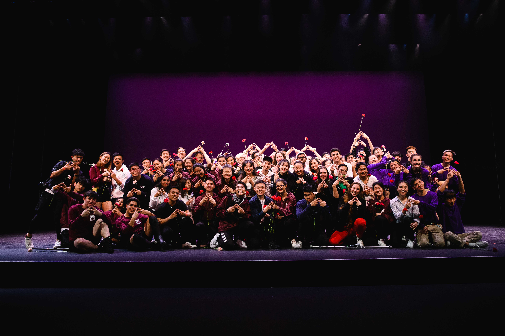
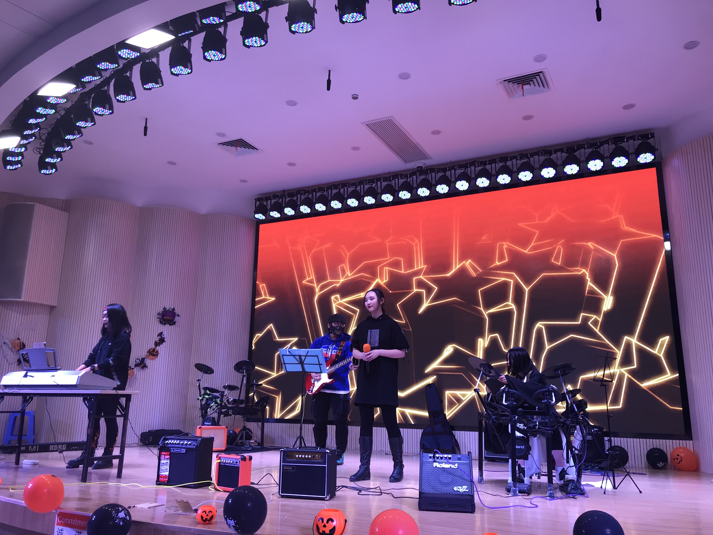

Hi there! My name is Scarlett Tao, and I am a junior student majoring in Computer Science and Theater & Performance Studies at UC Berkeley. I am primarily honing my human-centered design and mobile development skills. Keep scrolling to take a look at some projects I've done in and out of the classroom, my experience teaching CS, and more (dance, theater, etc.)!
The COVID
Tracking Project
I built this iOS application to provide visualization of data on COVID-19 testing and patient outcomes using public data API from The COVID Tracking Project, a volunteer organization launched from The Atlantic. It generates a line chart based on user-selected region, time range, and data types.
Homework Tracker
This is the first iOS application I have worked on! It intends to help students track assignments, labs, and projects of user-input classes. I used Figma to visualize and specify potential functionality, including login, class information set up, a dashboard of to-do assignments, and assignment description view.
Yelp Map
For this project, I created a visualization of restaurant ratings using machine learning and the Yelp academic dataset. In this visualization, Berkeley was segmented into regions shaded by the predicted rating of the closest restaurant (yellow is 5 stars, blue is 1 star).

Numc
For my Machine Structures class, I implemented a slower version of NumPy. I started with completing a naive solution for some matrix functions in C, then experimented with the setup file in Python and Python-C interface. Finally, I optimized my naive solution and achieved 50x comprehensive speedup using SIMD, unrolling, cache blocking, and OpenMP.
June 2020
Academic Intern
During the pandemic, I had been working with summer CS61C staff and helping students with any questions they might have. My responsibilities included helping out lab office hours, holding lab check-off appointments, and providing assistance at project parties.
This is my first time to teach CS, and I am glad to give back to the community in this way! I have always believed that, when one teaches, two learn. Now I have a better understanding of topics including assembly language, memory management, and parallelism, and I am glad that I was able to help students taking this class!
August 2020
Tutor
At the end of the summer session, I was extended an offer to get on course staff and work as a tutor for fall semester. I can't wait to begin this new chapter of teaching!
Dance
I have been dancing on AFX Dance since my first semester in college! I made a lot of friends and had so much fun with AFX. I have been on four dance teams, worked as Internal Events Chair in Summer/Fall 2o19, and then worked as an advisor in Spring 2020.
Theater has always been one of my biggest passions! I have been involved in theatrical productions since elementary school, and I am constantly working on my acting skills.
Theater
Band
I have been playing the piano since I was 3, and I started my own band in high school. We were mostly doing covers of popular songs and performing at school. Not only did I learn how to adapt songs and work with other instrumental players, but I also developed an effective way to collaborate and communicate with others.
Hope you had fun! (at least I did creating this portfolio)
Let me know if you have any feedback, and feel free to reach out and have a chat :)